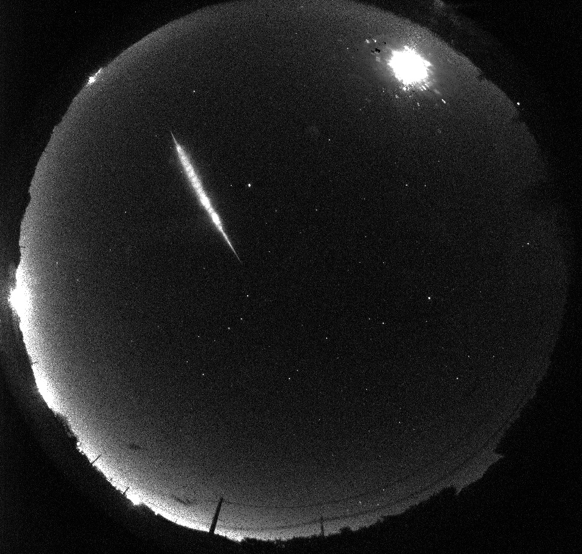

Thèse : Méthode d’analyse statistique appliquée au réseau d’observation européen des météores FRIPON
Résumé :

Cette thèse a pour sujet d'étude l'observation des météores à l'aide du réseau français de caméras FRIPON.
On y aborde toute la chaîne d'analyse des mesures des météores, des images brutes aux orbites. On y développe un estimateur des moindres carrés modifié adapté aux instruments larges et complexes tel qu'un réseau continental de caméras.
Cet estimateur des moindres carrés modifiés est construit pour rendre compte du caractère multi-échelle de FRIPON : de l'échelle des caméras individuelles jusqu'à l'échelle de ce réseau recouvrant l'Europe de Ouest. Il permet de construire un estimateur réaliste à partir des mesures provenant de caméras dont les caractéristiques peuvent être disparates, que ce soit à cause des différences entre les sites d'installation ou des défauts internes de certaines caméras.
L'application de cet estimateur à l'analyse des météores est ensuite discutée.
Nous démontrons notamment que certaines caractéristiques des météores ne sont pas toujours estimables à partir de l'étude de leur mouvement, comme la masse initiale du météoroïde ou encore son enthalpie de destruction.
Un estimateur des moindre carrés de ces caractéristiques n'a alors pas de sens.
Nous proposons un nouveau jeu de paramètres permettant de caractériser un météore et dont les estimateurs des moindres carrés ont une espérance et une variance toujours définies, quelque soit le type de météore et la qualité des mesures.
Par ailleurs, nous étudions les différents biais de mesures pouvant advenir lors de l'observation vidéo de météores. Nous démontrons que les météores les plus rapides présentent systématiquement des mesures dégénérées. Nous montrons que ces dégénérescences non seulement rendent impossible l'estimation de certaines caractéristiques, mais que de plus elles entraînent une surestimation de la vitesse d'entrée de ces météoroïdes dans l'atmosphère.
Cette surestimation des vitesses des météores les plus rapides entraîne l'apparition d'une population de météoroïdes faussement interstellaires.
Nous montrons que, dans le cadre de la campagne d'observation du réseau FRIPON, aucun météoroïde avec une origine interstellaire certaine n'a été observé. De fait, nous remettons en question l'existence d'une nombreuse population de météoroïdes interstellaires que certaines équipes disent observer.
Si les récentes découvertes de 1I/'Oumuamua et de 2I/Borisov attestent de la présence de corps d'origines interstellaires au sein de notre Système solaire, et donc potentiellement de météoroïdes d'origine interstellaire pouvant impacter la Terre, force est de constater que ces objets sont peu nombreux à réellement croiser le chemin de notre planète.
Liens utiles :
|